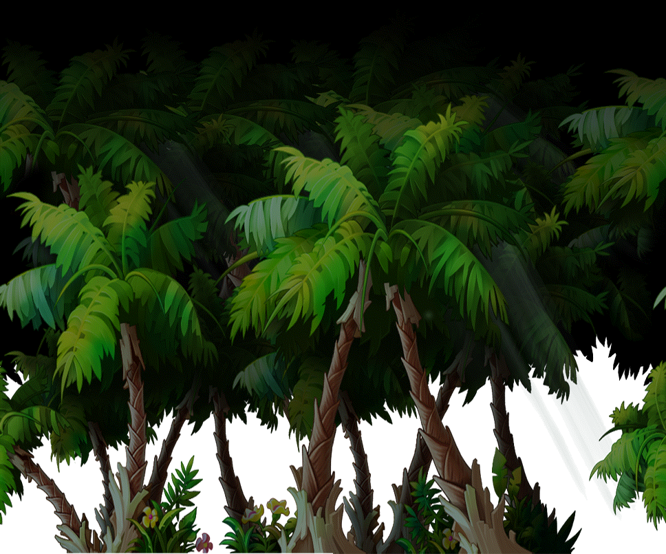
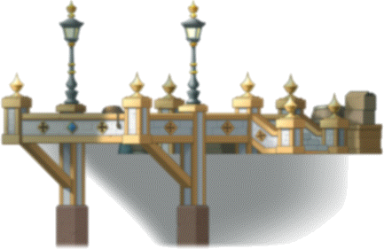

| 属性 | 内容 |
|---|
| back.0 | |
| back.0.origin | 18,531 |
| back.0.z | 0 |
| back.1 | |
| back.1.origin | 70,47 |
| back.1.z | 0 |
| back.2 | |
| back.2.origin | 230,262 |
| back.2.z | 0 |
| back.3 | |
| back.3.origin | 230,225 |
| back.3.z | 0 |
| back.4 | |
| back.4.origin | 230,281 |
| back.4.z | 0 |
| back.5 | |
| back.5.origin | 230,281 |
| back.5.z | 0 |
| back.6 |  |
| back.6.origin | 82,48 |
| back.6.z | 0 |
| back.7 | |
| back.7.origin | 5,58 |
| back.7.z | 0 |
| back.8 | |
| back.8.origin | 200,40 |
| back.8.z | 0 |
| back.9 | |
| back.9.origin | 71,27 |
| back.9.z | 0 |
| back.10 | |
| back.10.origin | 116,41 |
| back.10.z | 0 |
| back.11 | |
| back.11.origin | 217,223 |
| back.11.z | 0 |
| back.12 | |
| back.12.origin | 217,223 |
| back.12.z | 0 |
| back.13 |  |
| back.13.origin | 286,292 |
| back.13.z | 0 |
| back.14 | |
| back.14.origin | 286,264 |
| back.14.z | 0 |
| back.15 | |
| back.15.origin | 200,61 |
| back.15.z | 0 |
| back.20 | |
| back.20.origin | 62,234 |
| back.20.z | 0 |
| back.21 | |
| back.21.origin | 286,292 |
| back.21.z | 0 |
| back.22 |  |
| back.22.origin | 217,223 |
| back.22.z | 0 |
| back.23 | |
| back.23.origin | 217,223 |
| back.23.z | 0 |
| back.24 | |
| back.24.origin | 124,40 |
| back.24.z | 0 |
| back.30 | |
| back.30.origin | 484,13 |
| back.30.z | 0 |
| back.31 |  |
| back.31.origin | 484,402 |
| back.31.z | 0 |
| back.32 |  |
| back.32.origin | 484,402 |
| back.32.z | 0 |
| back.33 | |
| back.33.origin | 242,285 |
| back.33.z | 0 |
| back.34 | |
| back.34.origin | 242,315 |
| back.34.z | 0 |
| back.35 | |
| back.35.origin | 241,238 |
| back.35.z | 0 |
| back.36 |  |
| back.36.origin | 242,249 |
| back.36.z | 0 |
| back.37 | |
| back.37.origin | 483,286 |
| back.37.z | 0 |
| back.38 | |
| back.38.origin | 5,189 |
| back.38.z | 0 |
| back.40 | |
| back.40.origin | 13,366 |
| back.40.z | 0 |
| back.41 | |
| back.41.origin | 393,183 |
| back.41.z | 0 |
| back.42 | |
| back.42.origin | 452,158 |
| back.42.z | 0 |
| back.43 | |
| back.43.origin | 575,70 |
| back.43.z | 0 |
| back.44 |  |
| back.44.origin | 427,42 |
| back.44.z | 0 |
| back.45 | |
| back.45.origin | 283,42 |
| back.45.z | 0 |
| back.46 | |
| back.46.origin | 206,26 |
| back.46.z | 0 |
| back.47 | |
| back.47.origin | 11,193 |
| back.47.z | 0 |
| back.48 | |
| back.48.origin | 56,44 |
| back.48.z | 0 |
| back.49 | |
| back.49.origin | 69,52 |
| back.49.z | 0 |
| back.50 | |
| back.50.origin | 42,2 |
| back.50.z | 0 |
| back.51 | |
| back.51.origin | 129,30 |
| back.51.z | 0 |
| back.52 | |
| back.52.origin | 128,42 |
| back.52.z | 0 |
| back.53 | |
| back.53.origin | 211,37 |
| back.53.z | 0 |
| back.54 | |
| back.54.origin | 355,197 |
| back.54.z | 0 |
| back.55 | |
| back.55.origin | 407,180 |
| back.55.z | 0 |
| back.56 | |
| back.56.origin | 515,178 |
| back.56.z | 0 |
| back.57 | |
| back.57.origin | 665,176 |
| back.57.z | 0 |
| back.58 | |
| back.58.origin | 515,173 |
| back.58.z | 0 |
| back.59 | |
| back.59.origin | 878,171 |
| back.59.z | 0 |
| back.60 | |
| back.60.origin | 3,72 |
| back.60.z | 0 |
| back.61 | |
| back.61.origin | 323,56 |
| back.61.z | 0 |
| back.62 | |
| back.62.origin | 323,56 |
| back.62.z | 0 |
| back.63 |  |
| back.63.origin | 216,140 |
| back.63.z | 0 |
| back.64 | |
| back.64.origin | 302,264 |
| back.64.z | 0 |
| back.65 | |
| back.65.origin | 302,265 |
| back.65.z | 0 |
| back.66 | |
| back.66.origin | 126,38 |
| back.66.z | 0 |
| back.67 | |
| back.67.origin | 452,392 |
| back.67.z | 0 |
| back.68 | |
| back.68.origin | 452,392 |
| back.68.z | 0 |
| back.69 | |
| back.69.origin | 200,61 |
| back.69.z | 0 |
| ani.0.0 |  |
| ani.0.0.origin | 214,114 |
| ani.0.0.z | 0 |
| ani.0.0.delay | 240 |
| ani.0.1 | |
| ani.0.1.origin | 216,114 |
| ani.0.1.z | 0 |
| ani.0.1.delay | 240 |
| ani.0.2 | |
| ani.0.2.origin | 214,114 |
| ani.0.2.z | 0 |
| ani.0.2.delay | 240 |
| ani.0.3 |  |
| ani.0.3.origin | 212,114 |
| ani.0.3.z | 0 |
| ani.0.3.delay | 240 |
| ani.1.0 | |
| ani.1.0.origin | 188,26 |
| ani.1.0.z | 0 |
| ani.1.0.a0 | 255 |
| ani.1.0.a1 | 80 |
| ani.1.0.delay | 3000 |
| ani.1.1 | |
| ani.1.1.origin | 188,26 |
| ani.1.1.z | 0 |
| ani.1.1.a0 | 80 |
| ani.1.1.a1 | 255 |
| ani.1.1.delay | 3000 |
| ani.2.0 |  |
| ani.2.0.origin | 203,253 |
| ani.2.0.z | 0 |
| ani.2.0.a0 | 100 |
| ani.2.0.a1 | 255 |
| ani.2.0.delay | 5000 |
| ani.2.1 | |
| ani.2.1.origin | 203,253 |
| ani.2.1.z | 0 |
| ani.2.1.a0 | 255 |
| ani.2.1.a1 | 100 |
| ani.2.1.delay | 5000 |
| ani.3.0 | |
| ani.3.0.origin | 196,231 |
| ani.3.0.z | 0 |
| ani.3.0.a0 | 255 |
| ani.3.0.a1 | 50 |
| ani.3.0.delay | 4000 |
| ani.3.1 | |
| ani.3.1.origin | 196,231 |
| ani.3.1.z | 0 |
| ani.3.1.a0 | 50 |
| ani.3.1.a1 | 255 |
| ani.3.1.delay | 4000 |
| ani.4.0 | |
| ani.4.0.origin | 276,344 |
| ani.4.0.z | 0 |
| ani.4.0.a0 | 200 |
| ani.4.0.a1 | 120 |
| ani.4.0.delay | 3500 |
| ani.4.1 | |
| ani.4.1.origin | 276,344 |
| ani.4.1.z | 0 |
| ani.4.1.a0 | 120 |
| ani.4.1.a1 | 200 |
| ani.4.1.delay | 3500 |
| ani.5.0 | |
| ani.5.0.origin | 289,378 |
| ani.5.0.z | 0 |
| ani.5.0.a0 | 255 |
| ani.5.0.a1 | 80 |
| ani.5.0.delay | 3200 |
| ani.5.1 | |
| ani.5.1.origin | 289,378 |
| ani.5.1.z | 0 |
| ani.5.1.a0 | 80 |
| ani.5.1.a1 | 255 |
| ani.5.1.delay | 3200 |
| ani.6.0 | |
| ani.6.0.origin | 289,323 |
| ani.6.0.z | 0 |
| ani.6.0.a0 | 20 |
| ani.6.0.a1 | 220 |
| ani.6.0.delay | 1900 |
| ani.6.1 | |
| ani.6.1.origin | 289,323 |
| ani.6.1.z | 0 |
| ani.6.1.a0 | 220 |
| ani.6.1.a1 | 20 |
| ani.6.1.delay | 1900 |
| ani.7.0 |  |
| ani.7.0.origin | 400,71 |
| ani.7.0.z | 0 |
| ani.7.1 |  |
| ani.7.1.origin | 401,71 |
| ani.7.1.z | 0 |
| ani.7.2 | |
| ani.7.2.origin | 402,71 |
| ani.7.2.z | 0 |
| ani.7.3 | 1 |
| ani.7.4 | 0 |
| ani.7.5 | |
| ani.7.5.origin | 399,71 |
| ani.7.5.z | 0 |
| ani.7.6 |  |
| ani.7.6.origin | 398,71 |
| ani.7.6.z | 0 |
| ani.7.7 | 5 |
| ani.8.0 | |
| ani.8.0.origin | 400,95 |
| ani.8.0.z | 0 |
| ani.8.1 |  |
| ani.8.1.origin | 399,95 |
| ani.8.1.z | 0 |
| ani.8.2 |  |
| ani.8.2.origin | 398,95 |
| ani.8.2.z | 0 |
| ani.8.3 | 1 |
| ani.8.4 | 0 |
| ani.8.5 | |
| ani.8.5.origin | 401,95 |
| ani.8.5.z | 0 |
| ani.8.6 |  |
| ani.8.6.origin | 402,95 |
| ani.8.6.z | 0 |
| ani.8.7 | 5 |
| ani.9.0 | |
| ani.9.0.origin | 400,126 |
| ani.9.0.z | 0 |
| ani.9.1 | |
| ani.9.1.origin | 401,126 |
| ani.9.1.z | 0 |
| ani.9.2 |  |
| ani.9.2.origin | 402,126 |
| ani.9.2.z | 0 |
| ani.9.3 | 1 |
| ani.9.4 | 0 |
| ani.9.5 |  |
| ani.9.5.origin | 399,126 |
| ani.9.5.z | 0 |
| ani.9.6 |  |
| ani.9.6.origin | 398,126 |
| ani.9.6.z | 0 |
| ani.9.7 | 5 |
| ani.10.0 | |
| ani.10.0.origin | 214,114 |
| ani.10.0.z | 0 |
| ani.10.0.a0 | 100 |
| ani.10.0.a1 | 255 |
| ani.10.0.delay | 2750 |
| ani.10.1 | |
| ani.10.1.origin | 214,114 |
| ani.10.1.z | 0 |
| ani.10.1.a0 | 255 |
| ani.10.1.a1 | 100 |
| ani.10.1.delay | 2750 |
| ani.11.0 | |
| ani.11.0.origin | 117,88 |
| ani.11.0.z | 0 |
| ani.11.0.delay | 240 |
| ani.11.1 | |
| ani.11.1.origin | 117,88 |
| ani.11.1.z | 0 |
| ani.11.1.delay | 240 |
| ani.11.2 | |
| ani.11.2.origin | 117,88 |
| ani.11.2.z | 0 |
| ani.11.2.delay | 240 |
| ani.11.3 | |
| ani.11.3.origin | 117,89 |
| ani.11.3.z | 0 |
| ani.11.3.delay | 240 |
| ani.12.0 | |
| ani.12.0.origin | 117,122 |
| ani.12.0.z | 0 |
| ani.12.0.delay | 240 |
| ani.12.1 | |
| ani.12.1.origin | 117,124 |
| ani.12.1.z | 0 |
| ani.12.1.delay | 240 |
| ani.12.2 | |
| ani.12.2.origin | 117,125 |
| ani.12.2.z | 0 |
| ani.12.2.delay | 240 |
| ani.12.3 | |
| ani.12.3.origin | 117,123 |
| ani.12.3.z | 0 |
| ani.12.3.delay | 240 |